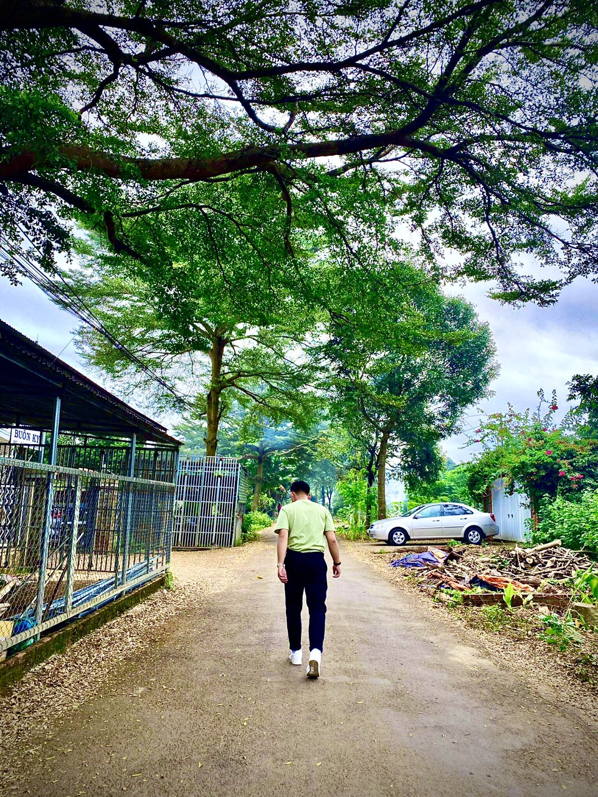

Ảnh Đại Diện
Đây là ảnh đại diện của tôi!
List Ảnh
Xem Ngay Hoạt Hình Doraemon
Nghe nhạc tại đây!
Portfolio Cá Nhân

Chuyên thiết kế ứng dụng web Designer
Tham khảo tại đây
GitHub
 Đây là ảnh đại diện của tôi!
Đây là ảnh đại diện của tôi!